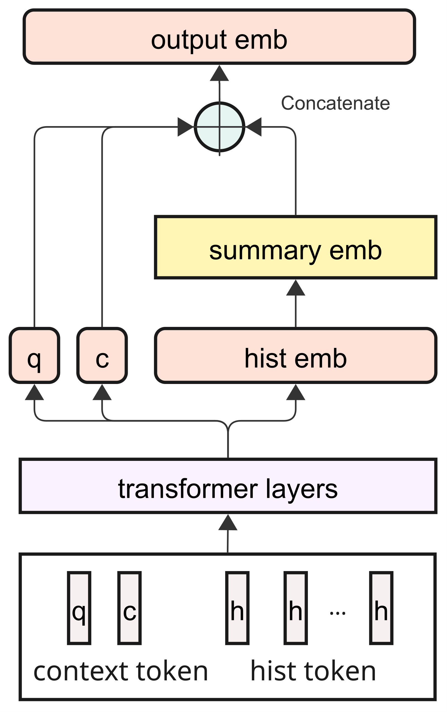
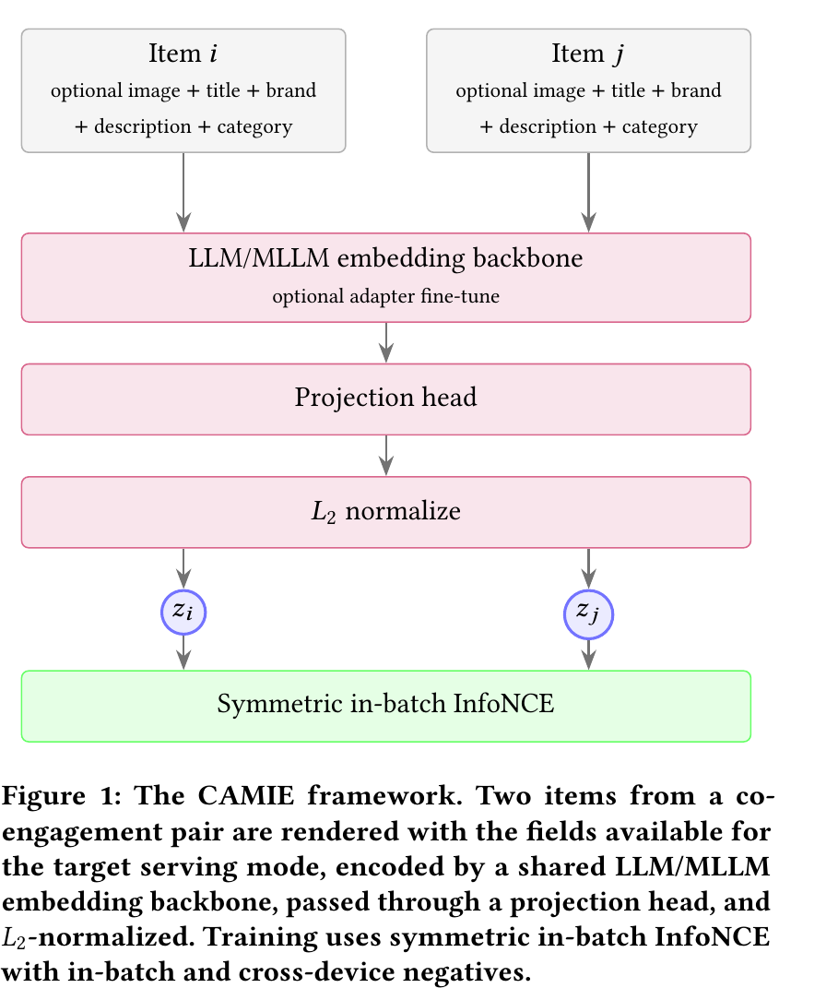
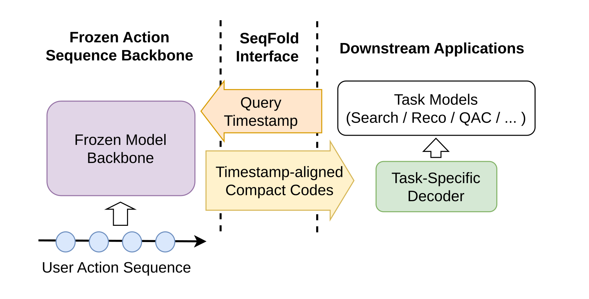

Contents · 7 sections
1The seven steps of one scoring request2What each retrieval path picks from the history3Why write the candidate product into every past action?4The two front positions bring in the query and summarize the whole history5The auxiliary task requires attention to flow only one way6Offline ablations: removing early fusion causes the deepest drop7Five weeks online: 11.5% more orders per impression and about 12% more latencySHARE
Which of a user's past actions a search ad ranker should pick depends on two things, the query searched this time and the product being scored; Wayfair picks 50 actions by each, and both offline and online metrics rise, while the one thing that matters most is still attaching the candidate product's information to every past action.
Wayfair's search results pages have ad slots. After a user searches a query, the ranking model predicts metrics such as click-through rate (the share of ad views that lead to a click) and conversion rate (the share of clicks that lead to an order) for every candidate ad product, and the calibrated predictions go to downstream ranking and bidding. One illustrative scene runs through the article: the user searches "outdoor dining set," and the model is scoring a teak dining table. This user has 1000 actions over the past year. Over the last two weeks they have looked almost only at bedside lamps, eight months ago they looked at a patio umbrella, and ten months ago they looked at an indoor teak sideboard.
The difficulty is that the user's history is too long. This paper notes that a raw history can contain tens of thousands of actions, the auction-time latency budget does not allow the model to process them all, and for any single scoring decision most past actions are useless. So Wayfair's production sequence model reads only the 100 most recent actions. In this example, the last 100 actions are all bedside lamps, neither the patio umbrella nor the teak sideboard makes it into the model's input, and nothing in the input shows that this user is furnishing an outdoor space and likes teak.
The common approach in long-sequence models is to first pick a small batch of actions similar to the product being scored out of the long history, and then have the model read that small batch closely. Picking only by the candidate product misses things in search. When scoring the teak dining table, the teak sideboard is similar and can be picked, while the patio umbrella does not resemble the table and will likely be missed, even though the umbrella is directly related to the query "outdoor dining set."
Conversely, picking only by the query (the words searched this time) is not enough either. The patio umbrella can be picked, but the teak sideboard is far from "outdoor dining set" and is missed. And within the same search, the teak dining table and an aluminum dining table get the same batch of past actions, which cannot tell the model that the user's past preference for teak supports only the first product.
The paper's change is direct: keep the 100 most recent actions as before, then pick 50 older actions by the candidate product and 50 by the query, and feed them all into a Transformer (a neural network in which every position in a sequence can refer to the others). In a five-week online A/B test, orders per impression (one display of an ad) in the treatment group were 11.5% higher than in the control group, at the cost of about 12% higher model serving latency.
The seven steps of one scoring request
Continue with the scoring of the teak dining table. The table below traces the sequence module from input to output; the first six steps run both online and in training, and the last step exists only in training.
| Step | Input | Operation | Output | Training only? |
|---|---|---|---|---|
| 1 Split history | User's actions over one year | Take the 100 most recent, put the rest in the retrieval pool | Recent sequence, retrieval pool | No |
| 2 Candidate path | Retrieval pool, teak dining table | Find the 50 actions whose products are most similar to the teak dining table | 50 past actions | No |
| 3 Query path | Retrieval pool, "outdoor dining set" | Find the 50 actions whose products are most related to this query | 50 past actions | No |
| 4 Build sequence | Three batches of actions, query, candidate product | Remove duplicate actions, fuse the candidate product into every history token (one position in the sequence), and put two more tokens at the front | Up to 202 tokens | No |
| 5 Encode | Token sequence | Pass through 2 Transformer layers | Output at every position | No |
| 6 Summarize | Output at every position | Concatenate the query position output, the candidate position output, and three whole-sequence summaries (learned projection, attention pooling weighted by the candidate product, max pooling) into one sequence vector | Input to the click, conversion, and other prediction heads | No |
| 7 Auxiliary task | Recent sequence representations from layer 1 | Predict the product of the user's next action | One auxiliary loss | Yes |

The output of step 4 is the intermediate result most worth remembering. Illustration: for this scoring of the teak dining table, the sequence fed into the Transformer looks roughly like this. Each line is one token, and vertical bars separate the fields before they are concatenated.
[query token] outdoor dining set
[candidate token] teak dining table
[recent action] click | bedside lamp A | teak dining table | attributes of bedside lamp A | attributes of teak dining table | search results page | 2 days ago
... (100 in total)
[candidate path] click | teak sideboard | teak dining table | attributes of teak sideboard | attributes of teak dining table | product detail page | 10 months ago
... (50 in total)
[query path] click | patio umbrella | teak dining table | attributes of patio umbrella | attributes of teak dining table | search results page | 8 months ago
... (50 in total)Every line for the three kinds of actions in the sequence, bedside lamp, teak sideboard, and patio umbrella, includes "teak dining table." This repetition is deliberate. In the ablations later (removing one design at a time and seeing how much the metrics fall), removing it causes the largest drop in both AUC metrics.
What each retrieval path picks from the history
Retrieval runs only over actions outside the 100 most recent, so all 100 retrieval slots go to actions the model could not read before. The candidate path compares how similar "the product of a past action" is to "the product being scored," and the query path compares how related "the product of a past action" is to "the query searched this time." The representations for both paths come from Wayfair's internal semantic search models and are not updated when the ranking model trains. The candidate path's product embeddings (vectors that represent a product as a list of numbers) have only 32 dimensions, which keeps the compute and memory cost of online ANN lookups (approximate nearest neighbor search, which quickly finds the actions with the closest vectors) small.
Illustration: this user has 1000 actions, the 100 most recent are set aside, and the retrieval pool has 900. Each path picks 50, and suppose 10 are picked by both paths. Only one copy of the same action is kept, so the history length is 100 + 50 + 50 − 10 = 190. So the 200 actions the paper mentions are an upper bound, and the more the two paths overlap, the shorter the sequence.
Switch to another candidate product to see how the two paths differ. When scoring the aluminum dining table in the same search, the 50 query path actions stay the same, because the query is still "outdoor dining set"; the 50 candidate path actions are replaced by actions similar to the aluminum dining table. This means the query path picks history related to this search, and the candidate path picks history related to this product.
The figure 100 keeps the existing production sequence length, and 50 per path was chosen so that the total length fits the production serving budget. The authors describe 100/50/50 as a practical production setting and did not search exhaustively for the best allocation.
Why write the candidate product into every past action?
A simpler approach is to have history tokens describe only the action itself, put one candidate token at the front of the sequence, and rely on attention to let the candidate product interact with the past actions. That way a user's history tokens do not change with the candidate product. The ablations below show that taking only this route performs much worse.
Wayfair's approach is more direct. Each history token is computed by an MLP (a multi-layer fully connected network) whose input concatenates the action type, the history product, the candidate product, the attributes of both products, and the page where the action happened. The MLP output then gets a time embedding (how long ago this action was) and a position type embedding (marking this as a history position) added to it. The paper calls this practice of putting the candidate product into every history token early fusion.
Illustration: the history has 190 actions and this search has 2 candidates; to isolate the effect of early fusion, suppose both candidates use the same history. With early fusion, the "teak sideboard" action produces two different tokens for the teak dining table and the aluminum dining table. The MLP directly receives the product pair "teak sideboard + teak dining table," and 190 × 2 = 380 history tokens must be computed in total. Without early fusion, the two candidates face exactly the same 190 history tokens, and the difference between the candidates can only pass through the candidate position via attention. Hoot says

Scoring the teak dining table
- Recent 100
- recent actions
- Query 50
- umbrellas etc.
- Candidate 50
- teak items etc.
- Action embs
- computed once
- History tokens
- each has table
- c token
- teak dining table
- q token input
- the query
- Transformer
- one pass
c takes two routes: into each history token for direct matching, and as its own token attending across the sequence. In the ablations, turning off early fusion or removing the context tokens clearly hurts.
Now an aluminum chair
- Recent 100
- same
- Query 50
- same
- Candidate 50
- re-retrieved
- Action embs
- reusable
- History tokens
- all recomputed
- c token
- the chair
- q token input
- same
- Transformer
- another pass
In the first layer the c token sees only itself and the q token. Masking history-to-history attention is not enough: it could read a future action and pass it back to earlier history in the next layer.
Illustrative: the user searches "outdoor dining set", and both candidates are made up. c goes into the token MLP, so even the same old action is recomputed for a new candidate; only embeddings without c (action, past product, surface, time) can be reused. Illustrative cost: 30 candidates in one request and full 200-action sequences give 30×200=6000 token MLP calls. If history tokens excluded the candidate, the 150 actions from recent 100 plus query 50 would be computed once, for 150+30×50=1650 calls (ignoring de-duplication). The c token and the candidate 50 still differ, so both Transformer layers still run once per candidate.
Source
paper §3.2 history-token formula (c enters MLP_token) and context tokens; §3.3 hybrid attention; §4 sequence settings and ablations; the candidates, the 30-candidate request and the cost are illustrative, and the dependencies are derived from the token formulaEarly fusion fuses only the candidate product, and the fields of a history token contain no query. For query information to enter the sequence, it relies on the query token introduced in the next section.

The two front positions bring in the query and summarize the whole history
Early fusion handles the one-to-one relation between "each action and the candidate product." It has no place for the query, and no position that summarizes the whole history. So Wayfair puts two tokens at the very front of the sequence: the query token is the query's representation plus a position type embedding, and the candidate token is built the same way from the candidate product.
These two positions pass through the Transformer together with the history tokens, and at the end each of their outputs is concatenated into the sequence vector on its own. Illustration: in layer 2, the query token gives attention weights of 0.6 to the patio umbrella, 0.3 to a rattan dining chair, and 0.1 to a bedside lamp. The query position output is then determined mainly by the patio umbrella's information, and this information goes on into the ranking prediction.
Without these two tokens, the query only decides which 50 actions are picked, and the sequence module no longer has any representation of the query itself. The ablations below test exactly this case.
The auxiliary task requires attention to flow only one way
On top of the ranking loss, Wayfair adds an auxiliary task with weight 0.05, called next-action loss (NAL): the representation of one action in the recent sequence is used to predict the product of the user's next action. The positive is the true next product, and the negatives are the next products of other samples in the same mini-batch (a small batch of samples trained together). NAL is computed only on the continuous sequence of the 100 most recent actions, because retrieved actions skip around in time.
Since the task predicts the next step, history positions must not read the future. The usual approach adds a causal mask so that each history position can read only earlier history positions. Once two tokens are added at the front of the sequence, this mask is no longer enough.
Illustration: the recent sequence has 6 actions, NAL uses the representation of action 5 to predict action 6, the answer is "bedding B," and suppose NAL is attached after layer 2. In layer 1, the query token can read the whole sequence and reads action 6. In layer 2, action 5 reads the query token, and action 6's information enters action 5's representation. The causal mask cannot block this path, because action 5 reads the query token and never reads action 6 directly.
The paper's solution is to restrict the information flow to one direction. In the first M layers, history positions can read only the past among themselves, history positions can read the query token and the candidate token, and these two tokens can read only themselves and each other. NAL is computed from the history representations of layer M. This way information from the query and candidate product can flow into history positions, but information from future actions cannot flow back.
After layer M, attention is fully open, and this part is trained only with the ranking loss. Ranking predicts this impression, and all past actions happened before the request, so opening everything does not read the future. Only after opening can the query token and candidate token read the whole history. Wayfair's experiments use 2 layers in total, with layer 1 restricted by the rules above and layer 2 open.
Offline ablations: removing early fusion causes the deepest drop
On Wayfair's internal data, the authors compare grouped click AUC and 7-day order AUC on a one-month held-out test set. AUC measures whether the model ranks samples that were truly clicked or ordered above the others, and higher is better. All numbers in the table are percentage changes relative to the production baseline, which reads only the 100 most recent actions, already has early fusion, and has neither the two tokens nor NAL.
| Configuration | History source | Two tokens | Early fusion | NAL | Click AUC change | 7-day order AUC change |
|---|---|---|---|---|---|---|
| M0 | Recent actions only | Yes | Yes | Yes | +0.46% | −0.61% |
| M1 | Recent + candidate path | Yes | Yes | Yes | +1.16% | +1.35% |
| M2 | Recent + query path | Yes | Yes | Yes | +1.00% | +1.16% |
| M3 | Recent + both paths | Yes | Yes | Yes | +1.37% | +2.19% |
| M4 | Recent + both paths | No | Yes | Yes | +0.45% | +0.28% |
| M5 | Recent + both paths | Yes | Yes | No | +1.11% | +1.46% |
| M6 | Recent + both paths | Yes | No | Yes | −4.71% | −6.06% |
M0 adds only the two tokens and NAL, with no long-term actions, and click AUC rises 0.46% while 7-day order AUC actually falls 0.61%. This means that with only recent actions, the query token, candidate token, and NAL are not enough to improve both the click and order metrics. My understanding is that they need long-term actions to show their value.
M1, M2, and M3 also carry the two tokens and NAL, so they must be compared with M0 to see the effect of retrieval itself. With only the candidate path, 7-day order AUC is +1.35%; with only the query path, +1.16%; with both paths, +2.19%. Both paths together beat either one alone, which means the second path brings signal the first lacks, and the authors call the two paths complementary. Both together are also below the sum of the two, and my understanding is that part of what the two paths pick overlaps (for example, a teak outdoor bench could be picked by both paths).
On click AUC, both paths together are only slightly above the candidate path alone, +1.37% versus +1.16%. These offline runs did not keep error ranges such as confidence intervals, and the authors also caution that small gaps between similar configurations should be read carefully, focusing on changes that are large and consistent in direction.
M4 removes the two tokens, and the click AUC gain falls from +1.37% to +0.45% while the 7-day order AUC gain falls from +2.19% to +0.28%. This means the two tokens provide information early fusion cannot, and much of the gain from long-term actions depends on them.
M5 removes NAL, and the two gains fall to +1.11% and +1.46%, a smaller effect than removing the two tokens, so the authors conclude that NAL makes a smaller positive contribution.
M6 changes the most: with both retrieval paths and both tokens kept and only early fusion removed, click AUC is 4.71% below the baseline and 7-day order AUC is 6.06% below the baseline. The authors checked M6's training and validation curves and found optimization normal, so they attribute the gap to the change in structure. This means relying only on the candidate token and attention to indirectly establish whether "this action and this candidate product match" is not enough for this ranking task.
The full new method (both retrieval paths plus the two tokens and NAL) raises 7-day order AUC by 2.19%, while removing the early fusion the baseline already had drops 7-day order AUC 6.06% below the baseline.
The drop in M6 cannot be counted as a contribution of this paper's new method, because early fusion was already in the baseline, and the authors state this explicitly. All comparisons are against Wayfair's own production models, and the authors state plainly that they did not compare under equal conditions with long-sequence systems such as TWIN and TransAct V2.
Five weeks online: 11.5% more orders per impression and about 12% more latency
The online experiment ran for five weeks with users randomly split, on real search ad traffic, with the production model as the control group. All numbers below are relative changes and are all significant at α=0.05, which means the chance of judging an effect real when there is none is kept within 5%.
Click-through rate rose 6.0%, attributed conversion rate rose 5.2%, and orders per impression rose 11.5%. The three numbers are consistent, because 1.06 × 1.052 is roughly 1.115. This means the order gain comes from both stages improving at once: users click ads more often, and after clicking they order more often.
Cost per click (CPC) fell 1.3% and total ad spend rose 0.8%. This means total spend rose only slightly, and the gain shows up mainly as more clicks and orders per impression. The authors read these results as consistent with better matching and higher conversion volume.
The cost is about 12% higher end-to-end model serving latency, still within the existing latency budget. The latency increase comes mainly from the candidate path's data fetching and the longer sequence, while most of the overall latency is still fetching upstream model outputs used as features. This means two-path retrieval with a 200-action sequence runs in Wayfair's production environment, but both the candidate path and the longer sequence cost latency.
Back to the scoring at the start: the 100 most recent actions show the user has been looking at bedside lamps these two weeks, the candidate path retrieves the teak sideboard, the query path retrieves the patio umbrella, and every action carries the teak dining table's information. Whether the patio umbrella can be picked depends entirely on the representations from the semantic search models, and ranking training does not correct these representations. The authors list improving these representations, and adjusting retrieval slots by how specific the query is, action type, and similar factors, as next steps.
How did this read for you?
Hoot made a note. Thanks for the feedback.
One tap, no sign-in; tap again to undo. Only anonymous counts are kept, never who you are.
Related papersMore from Paper Daily
 Personalization · 2026-08-03UxSID: Semantic-Aware User Interests Modeling for Ultra-Long SequenceDeep dive: UxSID: Semantic-Aware User Interests Modeling for Ultra-Long Sequence.
Personalization · 2026-08-03UxSID: Semantic-Aware User Interests Modeling for Ultra-Long SequenceDeep dive: UxSID: Semantic-Aware User Interests Modeling for Ultra-Long Sequence.
Personalization · 2026-09-02CAMIE: Co-Engagement-Aware Multimodal Item Embeddings for Snap Dynamic Product Ads RetrievalDeep dive: CAMIE: Co-Engagement-Aware Multimodal Item Embeddings for Snap Dynamic Product Ads Retrieval. Personalization · 2026-11-02Read More, Reason Deeper: Latent Workspaces for Long-Sequence RecommendationThis Meta paper gives long-sequence ranking a new structure in which reading more history and stacking more layers become two separately tunable knobs: with 10K history events, its NE beats HSTU by 0.19% while using 69.6% less forward compute. Current models tie the two together. A sequence encoder pays for every extra event in every layer, while models that first select relevant events select on…
Personalization · 2026-11-02Read More, Reason Deeper: Latent Workspaces for Long-Sequence RecommendationThis Meta paper gives long-sequence ranking a new structure in which reading more history and stacking more layers become two separately tunable knobs: with 10K history events, its NE beats HSTU by 0.19% while using 69.6% less forward compute. Current models tie the two together. A sequence encoder pays for every extra event in every layer, while models that first select relevant events select on… Personalization · 2026-10-22KuaFu: Compressing Long User Behavior into Understanding at Billion ScaleKuaFu avoids repeatedly encoding the same content across users and profiling tasks. It caches compact item representations, assembles them chronologically and uses staged training to preserve evidence. Tencent reports a 1.37% overall GMV increase against a long-term holdout.
Personalization · 2026-10-22KuaFu: Compressing Long User Behavior into Understanding at Billion ScaleKuaFu avoids repeatedly encoding the same content across users and profiling tasks. It caches compact item representations, assembles them chronologically and uses staged training to preserve evidence. Tencent reports a 1.37% overall GMV increase against a long-term holdout. Personalization · 2026-10-22ECHO: Efficient Cascade with Homogeneous Operators for Distillation-Guided 100K-Sequence ModelingECHO makes 100K-event histories affordable by retaining reusable original records before candidate-aware retrieval. A full-history teacher supervises selection, while retrieval and aggregation share relevance parameters. Kuaishou reports a 0.613% increase in app usage time in an online test.
Personalization · 2026-10-22ECHO: Efficient Cascade with Homogeneous Operators for Distillation-Guided 100K-Sequence ModelingECHO makes 100K-event histories affordable by retaining reusable original records before candidate-aware retrieval. A full-history teacher supervises selection, while retrieval and aggregation share relevance parameters. Kuaishou reports a 0.613% increase in app usage time in an online test. Personalization · 2026-09-30HELIX: Purified and Unified - Rethinking Feature Interaction and Sequence Modeling for Large-Scale RecommendationDeep dive: HELIX: Purified and Unified - Rethinking Feature Interaction and Sequence Modeling for Large-Scale Recommendation.
Personalization · 2026-09-30HELIX: Purified and Unified - Rethinking Feature Interaction and Sequence Modeling for Large-Scale RecommendationDeep dive: HELIX: Purified and Unified - Rethinking Feature Interaction and Sequence Modeling for Large-Scale Recommendation. Personalization · 2026-08-19UniDot: A Unified Network for Sequence Modeling and Feature Interaction in Large-scale RecommendationDeep dive: UniDot: A Unified Network for Sequence Modeling and Feature Interaction in Large-scale Recommendation.
Personalization · 2026-08-19UniDot: A Unified Network for Sequence Modeling and Feature Interaction in Large-scale RecommendationDeep dive: UniDot: A Unified Network for Sequence Modeling and Feature Interaction in Large-scale Recommendation.
Personalization · 2026-11-12SeqFold: Timestamp-Addressable Compressed States for User Action Sequence BackbonesDownstream search and recommendation models all want to reuse the output of a frozen long-sequence user model, but the full multi-layer hidden state for one user at one point in time averages several million bytes, too much to store or ship. Coupang's SeqFold compresses each layer's hidden states into a fixed number of interest slots: a learned gate decides how much each past action puts into eac…
Discussion
Add experiment details, reproduction notes or a different take. Requires a GitHub sign-in.
Loading the discussion…